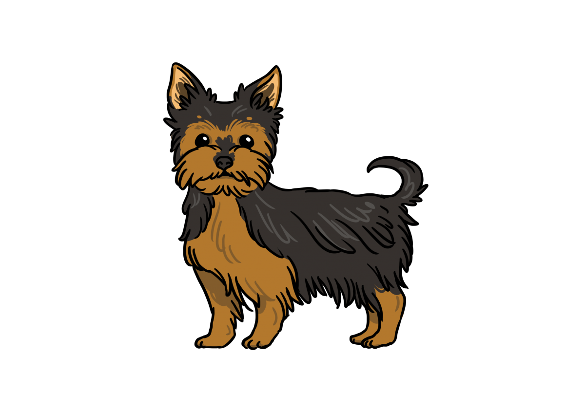
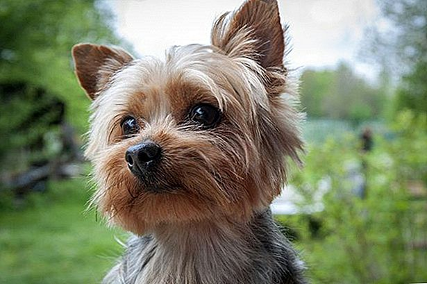
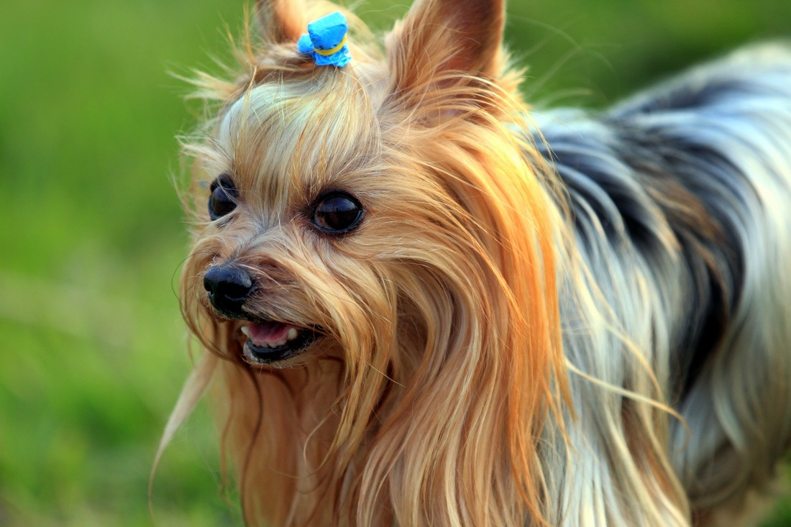
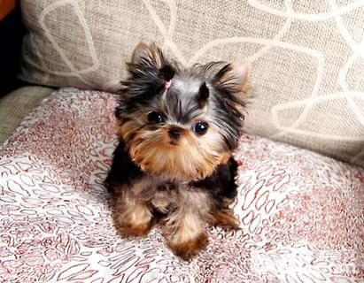

約克夏

外表
約克夏犬身材比較矮小，體型僅次于吉娃娃犬，約克夏的頭部常常是紮起來的。約克夏的耳朵是直立的，有著一個平坦的背部，而尾部則在中間位置斷尾。其以一身像幼絲一樣的披毛為特徵，全身都是暗色，暗藍灰色的身體與尾巴，其他部位為黃褐色，體重通常為3公斤以下。
性格
約克夏是一種很吸引人的玩具型犬種。迷人又聰明，個子雖小，卻是勇敢、忠誠又富感情的犬隻。 生氣勃勃，衝動，勇敢，但是固執已見。友善，倔強，好動，動作敏捷且輕快，對主人熱情、忠心，對於陌生人則退避三舍。
它很容易和家裡的成員相處，包括貓和其他犬隻。不過很會黏人，所以在介紹其他新來的動物時，需避免牠吃醋。由於個子太小，與小孩相處時，需避免小孩摔傷了。喜歡從高處跳下來，你必須提防點。隨時注意你的腳跟，尤其是關門和開門的時候，得確定它是否已經跟了進來。
喜歡和小孩玩耍，更喜歡睡在主人的大腿上。有捕鼠習慣，被毛不易梳理，適於公寓生活，是很好的玩賞犬。不必戶外牽遛，短距離運動即可；定期清潔牙齒、眼睛和外耳道；刷毛和乾洗是每日必須的，保持毛髮貼地即可。
歷史
早在維多利亞女王時代，它就是種時髦的寵物，深得男女老幼的喜愛，在犬界的地位十分鞏固。 亦是目前世界上最受歡迎的品種之一。該犬因產於英國的約克夏地區而得名，有100多年的歷史。 它曾一度被數次改良，在當地是工人和農民作為捕鼠的犬種，極受重視。 初期的品種遠比現今的體型大。
飼養注意事項
需花費較長的時間理毛
警覺性高，會因為一點聲響吠叫提醒主人
性格較聰明固執，比較不願意服從指令
因皮脂分泌旺盛，容易罹患皮膚病，最常感染黴菌
腎臟不佳，容易腎衰竭，需特別注意飲食
容易有膝蓋骨脫臼問題，要多加留意


